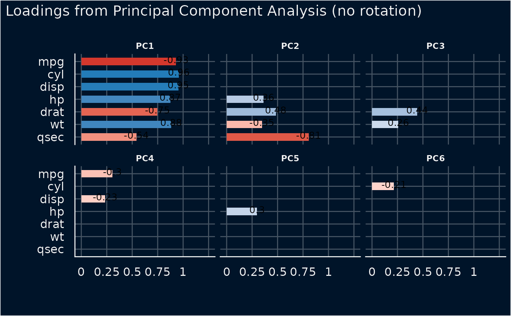

Plot method for principal component analysis
Source:R/plot.parameters_pca.R
plot.see_parameters_pca.RdThe plot() method for the parameters::principal_components() function.
Arguments
- x
An object.
- type
Character vector, indicating the type of plot.
- size_text
Numeric value specifying size of text labels.
- text_color
Character specifying color of text labels.
- size
Depending on
type, a numeric value specifying size of bars, lines, or segments.- show_labels
Logical. If
TRUE, text labels are displayed.- ...
Arguments passed to or from other methods.
Examples
library(parameters)
data(mtcars)
result <- principal_components(mtcars[, 1:7], n = "all", threshold = 0.2)
result
#> # Loadings from Principal Component Analysis (no rotation)
#>
#> Variable | PC1 | PC2 | PC3 | PC4 | PC5 | PC6 | Complexity
#> -------------------------------------------------------------------
#> mpg | -0.93 | | | -0.30 | | | 1.30
#> cyl | 0.96 | | | | | -0.21 | 1.18
#> disp | 0.95 | | | -0.23 | | | 1.16
#> hp | 0.87 | 0.36 | | | 0.30 | | 1.64
#> drat | -0.75 | 0.48 | 0.44 | | | | 2.47
#> wt | 0.88 | -0.35 | 0.26 | | | | 1.54
#> qsec | -0.54 | -0.81 | | | | | 1.96
#>
#> The 6 principal components accounted for 99.30% of the total variance of the original data (PC1 = 72.66%, PC2 = 16.52%, PC3 = 4.93%, PC4 = 2.26%, PC5 = 1.85%, PC6 = 1.08%).
plot(result)
#> Warning: Removed 25 rows containing missing values (position_stack).
#> Warning: Removed 25 rows containing missing values (geom_text).
